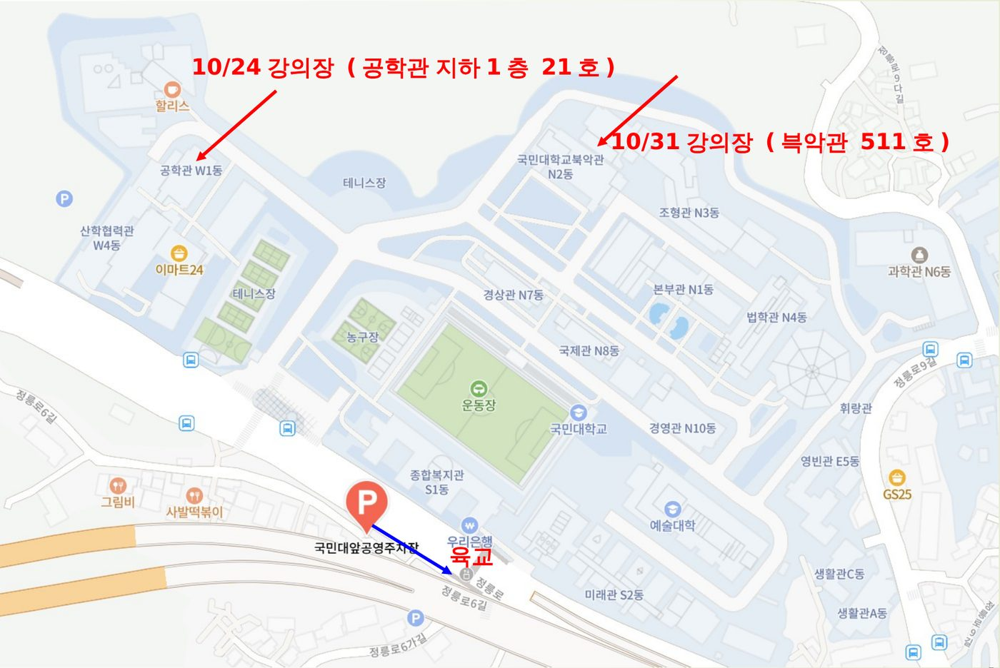

검색되는 사람에서, AI가 인용하는 사람으로
서울특별시 성북구 정릉로 77 국민대학교 · 건물 위치와 동선은 국민대 캠퍼스 안내와 아래 지도를 참고하세요.
차량 이용 시 국민대앞공영주차장(종일 10,800원)을 고려하세요. 일반 20대·전기차 10대로 이용자가 많은 편입니다. 주차 안내 보기
편의점, 카페, 식당 등 건물·편의시설 위치는 국민대 캠퍼스 안내에서 확인하세요.

서울 성북구 정릉로6길 41
종합복지관 건물 지하 주차장 (지하 1층~3층)
주차 지원이 없어 주차비는 본인 부담입니다. 국민대 교내 지하주차장(종합복지관 지하)은 종일 5만원(1시간 5천원, 3시간 1만 7천원, 5시간 2만 9천원)으로 부담이 큰 편입니다. 차량을 이용하신다면 국민대앞공영주차장(서울 성북구 정릉로6길 41, 종일 10,800원, 1시간 1,800원)을 고려하세요. 일반 20대·전기차 10대로 이용자가 많은 편이니 필요하면 1~2일 전 010-9542-4456으로 문의하세요. 가능하면 대중교통 이용을 권장합니다.
네. 10/24(토)는 공학관 지하 1층 21호, 10/31(토)는 북악관 511호입니다. 두 곳 모두 전산실습실입니다. 건물 위치는 위 강의장 안내 지도와 국민대 캠퍼스 안내에서 확인하세요.
1일차·2일차 연속 참석이 원칙입니다. 총 16시간 중 80% 이상(13시간 이상) 출석해야 수료되며, 출석이 80%에 미달하면 사업 운영 기준에 따라 향후 서울앵커사업 과정 선발에서 제외됩니다.
회차(4시간)별로 입실·퇴실 출석을 확인합니다(1일 4회). 늦게 오거나 일찍 나가면 출석 시간에 반영됩니다.
네. 과정 참가 첫 날 국민대 앵커사업단 실무자가 신분증으로 생년과 거주지를 확인합니다. 첫날 결석하면 두 번째 날에 지참하세요. 신분증상 주소와 실제 거주지가 다르면 주민등록등본을 발급받아 오세요.
강의실이 전산실습실로 준비되어 있습니다. 개인 노트북도 사용할 수 있으며, 가져오시면 충전기와 마우스를 함께 준비하세요.
국민대 앵커사업단에서 챗GPT비즈니스(단체용) 유료 버전을 교육 기간 동안 무료로 지원합니다. 10/23(금) 국민대 담당자가 일괄 결제할 예정이며, 금요일에 못 하신 분은 당일 강의장에서 등록을 도와드립니다.
구글 계정을 준비하고, Claude(claude.ai)와 ChatGPT(chatgpt.com)에 미리 가입해 오세요. 구글 계정이 있으면 쉽게 가입할 수 있고 모두 무료입니다.
만들고 싶은 주제(회사 프로그램 홍보, 업무 홍보자료, 퍼스널 브랜딩, 강의 홍보 등)를 정해 오시고, 상반신이 잘 나온 사진 파일을 준비해 오세요. 강의 시간에 실습에 사용합니다.
별도 인쇄물 교재는 없습니다. 회차별 워크북과 참고 자료는 강의 패들렛으로 공유합니다.
식사와 주차는 지원되지 않습니다. 교육 참가비는 무료입니다. 주차비는 위 '주차비는 얼마인가요?'를 참고하세요.
과정 세부 안내 페이지(kookmin-ai.aimay.chatgpt.site)에서 확인할 수 있습니다.
김진수 강사(010-8921-9536)에게 문의하세요.